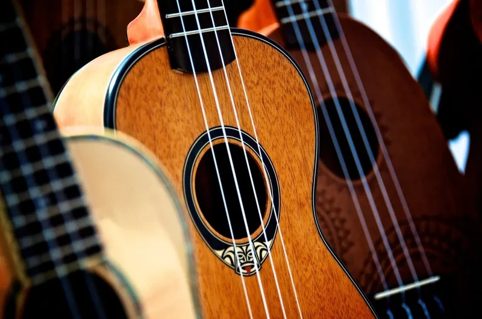
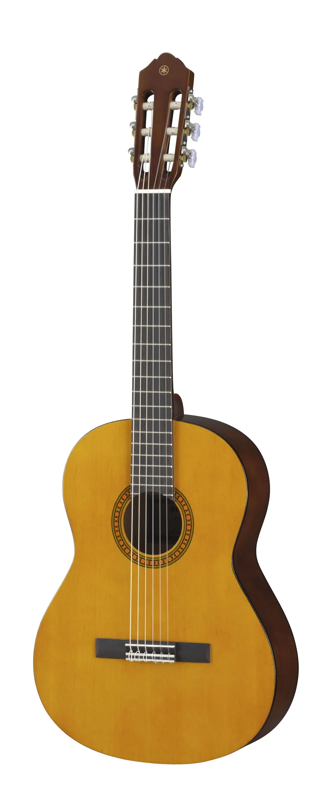
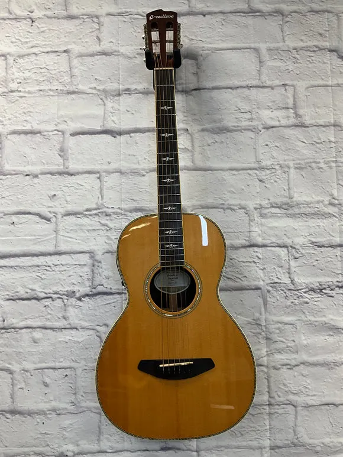

Guitarra para niños: las 3 mejores según la edad
Actualizado el
Elegir la primera guitarra para niños no va de gastar mucho, sino de acertar con el tamaño. Una guitarra demasiado grande hace que el peque no llegue bien a los trastes, se frustre y deje la música a las dos semanas. Por eso hemos ordenado nuestras recomendaciones por edad: de 3 a 5 años basta una guitarra de tamaño 1/4, y a partir de los 8 ya conviene una 3/4.
Qué tamaño de guitarra para niños elegir según la edad
Las guitarras infantiles se miden en fracciones del tamaño normal (4/4). La edad es orientativa: si el niño es alto para su edad, puede pasar antes al tamaño siguiente.
| Tamaño | Edad orientativa |
|---|---|
| 1/4 | 3 a 5 años |
| 1/2 | 5 a 8 años |
| 3/4 | 8 a 11 años |
| 4/4 (tamaño adulto) | Desde 12 años |
Un truco para comprobarlo: con el niño sentado y la guitarra en posición, debe llegar al final del mástil con el brazo izquierdo sin estirarlo del todo.
Las 3 mejores guitarras para niños
De 3 a 5 años: Mad About 1/4

A esta edad lo importante es que el niño juegue con el instrumento y le pierda el miedo. Esta guitarra de tamaño 1/4 lleva cuerdas de nailon, suaves para dedos pequeños, y es lo bastante ligera para que la sujete solo. No es un instrumento para clases serias, pero sí una primera toma de contacto con la música.
Ventajas
- Tamaño y peso pensados para los más pequeños
- Cuerdas de nailon que no hacen daño en los dedos
Inconvenientes
- Mantiene peor la afinación que una guitarra de mayor calidad
- Se queda pequeña en uno o dos años
De 6 a 8 años: Yamaha CGS102AII (1/2)

Es la edad en la que muchos niños empiezan clases de verdad, y aquí ya merece la pena una guitarra que afine bien y suene como un instrumento de verdad. La Yamaha CGS102AII es una de las más recomendadas por los profesores para esta edad y tiene muy buenas valoraciones en Amazon.
Ventajas
- Calidad Yamaha en tamaño infantil
- Afina bien y mantiene la afinación
- Muy bien valorada por quienes la han comprado
Inconvenientes
- Más cara que las guitarras infantiles genéricas
- No incluye funda
De 9 a 12 años: Yamaha CS40II (3/4)

Con el tamaño 3/4 el niño ya tiene una guitarra casi de adulto. La Yamaha CS40II es la opción más segura para esta franja: buena calidad, sonido equilibrado y un precio razonable. Le servirá hasta que pase a una guitarra de tamaño completo.
Ventajas
- Sonido y acabados de guitarra seria
- Le dura varios años, hasta pasar al 4/4
Inconvenientes
- Si el niño ya es alto, quizá le compense directamente una 4/4
¿Guitarra española o eléctrica para niños?
Guitarra española para niños: la opción clásica
La guitarra española para niños es la opción más habitual para empezar. Las cuerdas de nailon son blandas y no hacen daño, no necesita amplificador y es la que se usa en las escuelas de música y en el conservatorio. Las tres guitarras de esta lista son españolas por eso.
Guitarra eléctrica para niños: si le gusta el rock
Si el niño escucha rock y lo que quiere es sonar como sus grupos favoritos, una guitarra eléctrica para niños puede motivarle mucho más. Hay modelos de tamaño reducido, como la Donner DSJ-100 (unos 100 €), pensados para manos pequeñas. Ten en cuenta que necesitará un amplificador. Si es un adolescente y ya usa tamaño adulto, mira nuestra guía de guitarra eléctrica para principiantes.
Preguntas frecuentes
¿A qué edad puede empezar un niño a tocar la guitarra?
Puede empezar a jugar con una guitarra pequeña desde los 3 o 4 años, pero lo habitual es empezar clases hacia los 6 o 7, cuando los dedos tienen más fuerza y aguantan más tiempo concentrados. Lo importante es que el tamaño de la guitarra sea el adecuado para su edad.
¿Sirve una guitarra de juguete para aprender música?
No es lo ideal. Las guitarras de juguete suelen llevar cuerdas que no afinan y suenan mal aunque el niño toque bien, y eso le desanima. Si quiere aprender música de verdad, mejor una guitarra infantil de tamaño 1/4 o 1/2 de una marca de instrumentos.